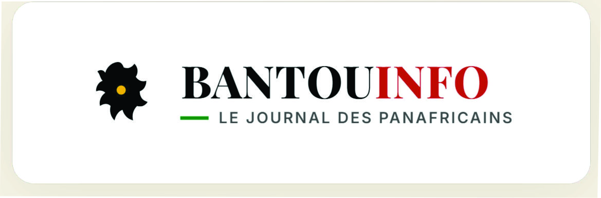

Le pagne, fil conducteur d'une identité panafricaine retrouvée
Entre tradition textile et mode contemporaine, le pagne s'impose comme symbole d'unité culturelle.

GMCC vous accompagne dans :
Entre tradition textile et mode contemporaine, le pagne s'impose comme symbole d'unité culturelle.
Ces cinéastes racontent l'Afrique et sa diaspora avec un regard résolument contemporain.
Entre héritage et expérimentation, une scène musicale foisonnante émerge à travers le continent.
Où en sont les discussions entre musées européens et institutions africaines ?